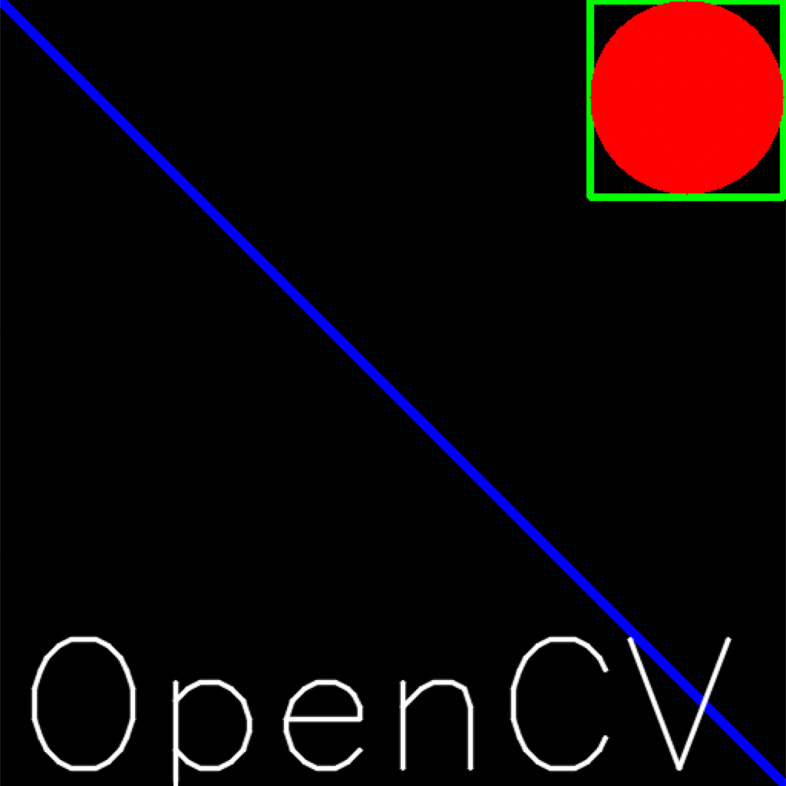
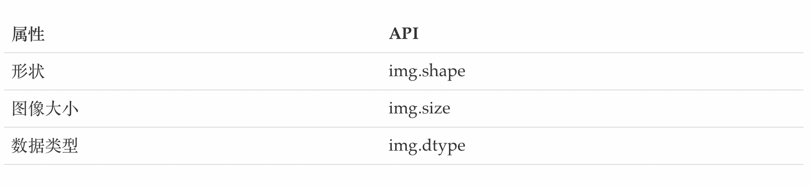

图像的基础操作
学习目标
掌握图像的读取和保存方法
能够使用OpenCV在图像上绘制几何图形
能够访问图像的像素
能够获取图像的属性，并进行通道的分离和合并
能够实现颜色空间的变换
1 图像的IO操作
这里我们会给大家介绍如何读取图像，如何显示图像和如何保存图像。
1.1 读取图像
- API
cv.imread()
参数：
要读取的图像
读取方式的标志
cv.IMREAD*COLOR：以彩色模式加载图像，任何图像的透明度都将被忽略。这是默认参数。
cv.IMREAD*GRAYSCALE：以灰度模式加载图像
cv.IMREAD_UNCHANGED：包括alpha通道的加载图像模式。
可以使用1、0或者-1来替代上面三个标志
参考代码
import numpy as np import cv2 as cv # 以灰度图的形式读取图像 img = cv.imread('messi5.jpg',0)
注意：如果加载的路径有错误，不会报错，会返回一个None值
1.2显示图像
1 . API
cv.imshow()
参数：
- 显示图像的窗口名称，以字符串类型表示
- 要加载的图像
注意：在调用显示图像的API后，要调用cv.waitKey()给图像绘制留下时间，否则窗口会出现无响应情况，并且图像无法显示出来。
另外我们也可使用matplotlib对图像进行展示。
参考代码
# opencv中显示 cv.imshow('image',img) cv.waitKey(0) # matplotlib中展示 plt.imshow(img[:,:,::-1])
1.3 保存图像
API
cv.imwrite()参数：
- 文件名，要保存在哪里
- 要保存的图像
参考代码
cv.imwrite('messigray.png',img)1.4 总结
我们通过加载灰度图像，显示图像，如果按's'并退出则保存图像，或者按ESC键直接退出而不保存。
import numpy as np import cv2 as cv import matplotlib.pyplot as plt # 1 读取图像 img = cv.imread('messi5.jpg',0) # 2 显示图像 # 2.1 利用opencv展示图像 cv.imshow('image',img) # 2.2 在matplotplotlib中展示图像 plt.imshow(img[:,:,::-1]) plt.title('匹配结果'), plt.xticks([]), plt.yticks([]) plt.show() k = cv.waitKey(0) # 3 保存图像 cv.imwrite('messigray.png',img)
2 绘制几何图形
2.1 绘制直线
cv.line(img,start,end,color,thickness)
参数：
- img:要绘制直线的图像
- Start,end: 直线的起点和终点
- color: 线条的颜色
- Thickness: 线条宽度
2.2 绘制圆形
cv.circle(img,centerpoint, r, color, thickness)
参数：
- img:要绘制圆形的图像
- Centerpoint, r: 圆心和半径
- color: 线条的颜色
- Thickness: 线条宽度，为-1时生成闭合图案并填充颜色
2.3 绘制矩形
cv.rectangle(img,leftupper,rightdown,color,thickness)
参数：
- img:要绘制矩形的图像
- Leftupper, rightdown: 矩形的左上角和右下角坐标
- color: 线条的颜色
- Thickness: 线条宽度
2.4 向图像中添加文字
cv.putText(img,text,station, font, fontsize,color,thickness,cv.LINE_AA)
参数：
- img: 图像
- text：要写入的文本数据
- station：文本的放置位置
- font：字体
- Fontsize :字体大小
2.5 效果展示
我们生成一个全黑的图像，然后在里面绘制图像并添加文字
import numpy as np
import cv2 as cv
import matplotlib.pyplot as plt
# 1 创建一个空白的图像
img = np.zeros((512,512,3), np.uint8)
# 2 绘制图形
cv.line(img,(0,0),(511,511),(255,0,0),5)
cv.rectangle(img,(384,0),(510,128),(0,255,0),3)
cv.circle(img,(447,63), 63, (0,0,255), -1)
font = cv.FONT_HERSHEY_SIMPLEX
cv.putText(img,'OpenCV',(10,500), font, 4,(255,255,255),2,cv.LINE_AA)
# 3 图像展示
plt.imshow(img[:,:,::-1])
plt.title('匹配结果'), plt.xticks([]), plt.yticks([])
plt.show()
结果：

3 获取并修改图像中的像素点
我们可以通过行和列的坐标值获取该像素点的像素值。对于BGR图像，它返回一个蓝，绿，红值的数组。对于灰度图像，仅返回相应的强度值。使用相同的方法对像素值进行修改。
import numpy as np
import cv2 as cv
img = cv.imread('messi5.jpg')
# 获取某个像素点的值
px = img[100,100]
# 仅获取蓝色通道的强度值
blue = img[100,100,0]
# 修改某个位置的像素值
img[100,100] = [255,255,255]
4 获取图像的属性
图像属性包括行数，列数和通道数，图像数据类型，像素数等。

5 图像通道的拆分与合并
有时需要在B，G，R通道图像上单独工作。在这种情况下，需要将BGR图像分割为单个通道。或者在其他情况下，可能需要将这些单独的通道合并到BGR图像。你可以通过以下方式完成。
# 通道拆分
b,g,r = cv.split(img)
# 通道合并
img = cv.merge((b,g,r))
6 色彩空间的改变
OpenCV中有150多种颜色空间转换方法。最广泛使用的转换方法有两种，BGR↔Gray和BGR↔HSV。
API：
cv.cvtColor(input_image，flag)
参数：
- input_image: 进行颜色空间转换的图像
- flag: 转换类型
- cv.COLOR_BGR2GRAY : BGR↔Gray
- cv.COLOR_BGR2HSV: BGR→HSV
总结：
图像IO操作的API：
cv.imread(): 读取图像
cv.imshow()：显示图像
cv.imwrite(): 保存图像
在图像上绘制几何图像
cv.line(): 绘制直线
cv.circle(): 绘制圆形
cv.rectangle(): 绘制矩形
cv.putText(): 在图像上添加文字
直接使用行列索引获取图像中的像素并进行修改
图像的属性

拆分通道：cv.split()
通道合并：cv.merge()
色彩空间的改变
cv.cvtColor(input_image，flag)